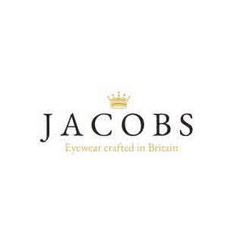

Trade Mark Journal No.2025/024 13 June 2025
UK00004212214 1 June 2025 (9)

- Class 9
- Eyewear; Prescription eyewear; Protective eyewear; Sports eyewear; Corrective eyewear; Eyewear pouches; Eyewear cases; Cases for eyewear; Eyeglasses; Fashion eyeglasses; Sunglass lenses; Lenses for eyeglasses; Sunglasses; Cases for eyeglasses and sunglasses; Lenses for sunglasses; Optical lenses for eyeglasses; Fashion sunglasses; Protective eyeglasses; Optical lenses for use with sunglasses; Optical lenses for sunglasses; Frames for spectacles and sunglasses; Prescription eyeglasses; Eyeglass lenses; Nose pads for eyewear; Prescription sunglasses; Glasses, sunglasses and contact lenses; Eyeglasses for sports; Frames for eyeglasses; Frames for sunglasses; Sunglasses frames; Cases for spectacles and sunglasses; Smart phones in the form of eyewear; Lenses for glasses; Sunglass temples; Magnifying eyeglasses; Optical lenses for spectacles; Spectacles [glasses]; Magnetic clip-on sunglass lenses; Clip-on sunglasses; Lenses for spectacles; Chains for spectacles and for sunglasses; Chains for spectacles and sunglasses; Eyeglass frames; Optical glasses; Prescription glasses; Protective glasses; Anti-glare glasses; Frames for eye glasses; Replacement lenses for glasses; Glasses; Sports training eyeglasses; Cases for eyeglasses; Sunglass cases; Straps for sunglasses; Fashion spectacles; Ophthalmic lenses; Glacier eyeglasses; Shooting glasses [optical]; Glass ophthalmic lenses; Ski glasses; Sports glasses; Glasses for sports; Glasses frames; Frames for glasses; Cases for sunglasses; Eye glasses; Chains for eyeglasses; Prescription spectacles; Goggles; Anti-glare spectacles; Spectacles [optics]; Sunglass nose pads; Eyeglass temples; Protective goggles; Sunglasses for pets; Covers for sunglasses; Sunglass cords; Frames for spectacles; Anti-dazzle spectacles; Magnifying glasses [optics]; Optical lenses; Lenses (Optical -); Anti-fogging safety goggles; Eyeglass shields; Protective spectacles; Antireflection coated eyeglasses; Antiglare glasses (anti-glare); Spectacle glasses; Cords for eyeglasses; Goggles for use in sports; Goggles for sports; Sports goggles; Sports (Goggles for -); Chains for sunglasses; Corrective glasses; Sight glasses [optical]; 3D eye glasses; Eyeglass lanyards; Opera glasses; Anti-reflective lenses; Prescription goggles for swimming; Cords for sunglasses; Silicone nose pads for eyeglasses; Plastic lenses; Theatre glasses; Dustproof glasses; Ski goggles; Motorcycle goggles; Spectacles; Smart glasses; Eyeglass cases; Cases (Eyeglass -); Sun glasses; Anti-glare visors; Magnifying glasses; Children's eye glasses; Smartglasses; Cases for children's eyeglasses.
MAY Younis